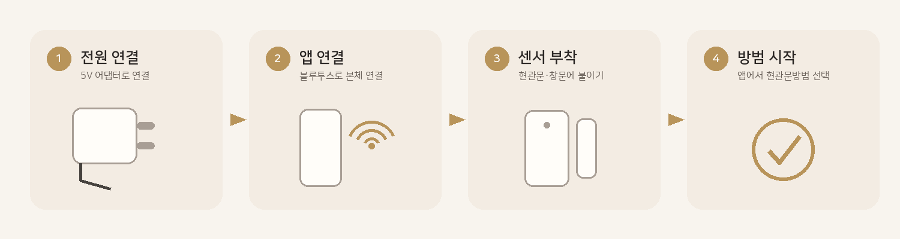
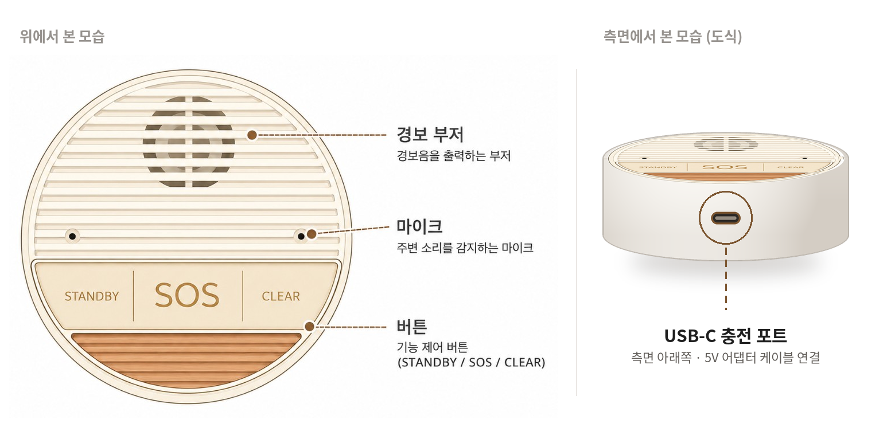
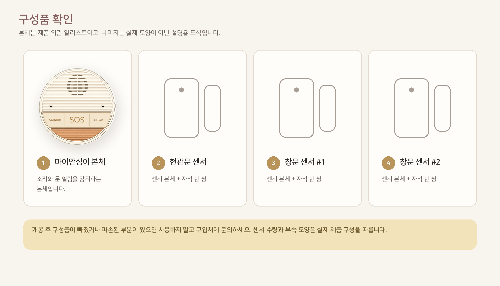
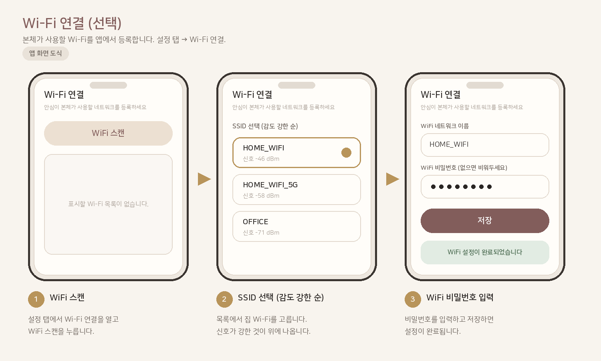
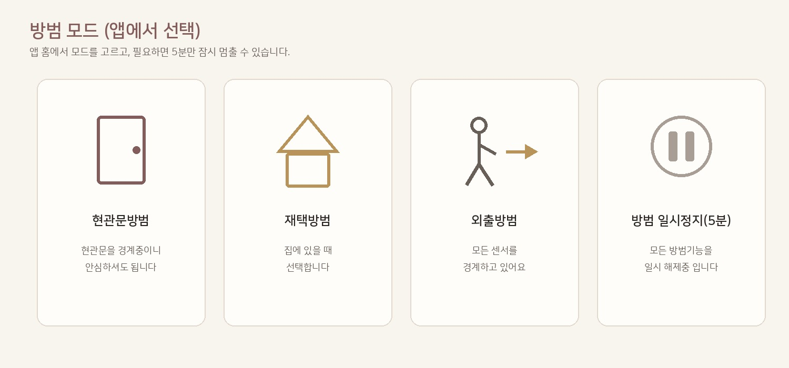
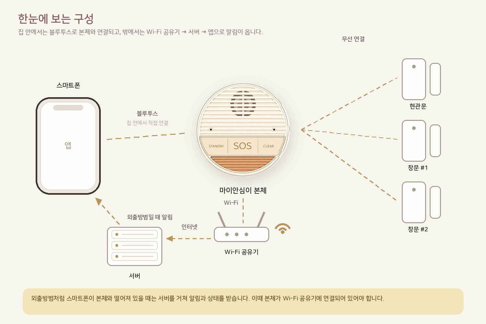

본체 알아보기
소리가 나오고 들어오는 곳, 버튼, 그리고 측면 충전 포트 위치를 확인하세요.

STANDBY5분 일시정지
SOS비상 도움 요청3초 이상 누르기
CLEAR비상 해제
설치 영상 가이드
소리 없이 자동으로 넘어가는 짧은 가이드입니다. 재생·일시정지·다음을 눌러 보세요.
박스 안에 무엇이 있나요?
개봉 후 아래 구성이 모두 있는지 확인하세요.

설치하기
한 단계에 한 가지씩. 사진과 짧은 문장만 따라가면 됩니다.
1
부저·마이크·버튼을 막지 않게 두세요
집 안 소리가 잘 들리는 선반·테이블에 둡니다.
- 상단 중앙 경보 부저 원형 그릴을 가리지 않기
- 좌·우 마이크 구멍 2곳을 가리지 않기
- 하단 버튼부(STANDBY·SOS·CLEAR)가 손에 닿는 방향으로 두기
- 마이크 구멍에 이물질을 넣지 않기
- TV·스피커 바로 옆은 피하기
2
전원을 연결하세요
케이블을 본체 측면 USB-C 포트에 꽂고, 반대쪽을 5V 어댑터에 연결해 콘센트에 꽂습니다.
- 5V 어댑터·케이블만 사용하기
- 전원은 항상 켜 둔 상태로 사용하기
- 연결되면 앱에서 통신 상태를 확인하기
3
앱을 설치하고 연결하세요
앱스토어에서 마이안심이 앱을 설치한 뒤, Bluetooth로 본체와 연결합니다.
- 본체 2m 이내로 가까이
- 앱에서 기기 선택 → 연결 (“집을 지키고 있습니다” 보이면 성공)
- 위급 시 보낼 구조요청 문구와 연락받을 비상 연락처를 미리 설정
- 설정에서 Wi-Fi도 연결해 두면 외출 중 알림을 받을 수 있습니다
4
현관문 센서를 붙이세요
복잡한 공구 없이, 동봉된 양면테이프로 현관문·창문에 자석 감지기를 붙여 주세요.
- 문을 닫은 상태에서 센서와 자석이 가깝게 마주보게 부착
- 문틀 ↔ 문짝에 각각 부착 (창문 센서도 같은 방식)
- 간격이 멀면 감지가 부정확해질 수 있음
- 앱이 연결된 뒤 붙이면, 문을 여닫을 때 앱 표시가 바뀌는지 바로 확인 가능
앱에서 확인 · 설정
연결한 다음 앱에서 이것만 확인하면 됩니다.
센서 등록은 이미 끝나 있습니다 — 함께 들어 있는 센서는 공장에서 등록해 출하합니다. 따로 등록할 필요 없이 상태 탭에서 등록됨 표시만 확인하세요.

센서 상태 확인
하단 상태 탭 → 현관문/창문 카드가 등록됨인지 확인. 센서를 새로 추가하거나 교체할 때만 카드를 눌러 등록합니다.

5. Wi-Fi 연결 (권장)
설정 → Wi-Fi 연결 → 집 공유기 선택 → 비밀번호 → 등록
꼭 미리 설정 — 위급 시 보낼 구조요청 문구와 연락을 받을 비상 연락처를 설정에서 넣어 두세요. Wi-Fi도 연결해 두면 외출방범 알림을 받을 수 있습니다.
방범 모드 — 상황별 스마트 방범
재택·외출 상태를 스스로 파악해 가장 알맞은 방법으로 집을 지킵니다. 전원을 켜면 현관문방범으로 시작합니다.

🚪 현관문방범
기본 안심 모드. 현관문이 열리면 비명인식 대기.
🏠 재택방범
집에 혼자 있을 때. 창문 감지도 함께.
🚶 외출방범
집을 비웠을 때. 침입 즉시 알림·짧은 부저.
⏱ 5분 일시정지
택배·청소처럼 잠깐만 끌 때.
모드마다 이렇게 동작합니다
무엇을 감시하고, 어떤 때 울리고, 어떻게 알려 주는지가 다릅니다.

🚪
현관문방범 — 기본 안심 모드
일상적인 창문 사용을 위해 창문 감지기는 무시합니다. 오직 현관문이 열렸을 때만 비명인식 대기모드로 바뀝니다.
- 현관문이 열린 뒤 대기시간 안에 비명 단어가 들리면 본체에서 강력한 사이렌이 울립니다.
- 미리 지정해 둔 비상 연락처로 구조 문자가 즉시 송출됩니다.
- 안전 포인트 — 침입자가 사이렌을 임의로 끌 수 없도록, 부저는 마이안심이 앱의 「부저 정지」로만 끌 수 있습니다.
🏠
재택방범 — 집에 혼자 있을 때
현관문방범에 더해 창문 감지기 보안이 함께 켜집니다. 외부 침입이 걱정될 때 쓰세요.
- 창문을 통해 누군가 들어오려 해 창문 감지기가 동작하면, 즉시 스마트폰으로 푸시 알람을 보내 위험을 알려 줍니다.
- 사이렌은 울리지 않습니다. 집에 있는 사람에게 조용히 알려 주기 위함입니다.
- 알람이 오면 앱에서 어느 문·창문인지 확인하고, 위급하면 112·119에 신고하세요.
🚶
외출방범 — 집을 비웠을 때
빈집의 출입을 철저히 감시합니다. 침입이 감지되면 즉시 대응합니다.
- 문·창문이 열리면 곧바로 스마트폰으로 경고 푸시 알람이 갑니다.
- 집 안 본체에서는 짧고 강렬한 부저를 울려 침입자가 놀라 도망가도록 합니다.
- 알림은 Wi-Fi와 서버를 거쳐 밖에 있는 스마트폰으로 전달됩니다.
- 집에 돌아와 앱이 다시 연결되면 현관문방범으로 돌아오고, 외출 중 기록을 앱에서 확인할 수 있습니다.
모드가 저절로 바뀔 때 — 시스템이 재택·외출을 스스로 파악합니다. 스마트폰이 본체와 멀어져 블루투스가 끊기면 외출방범으로, 집에 돌아와 다시 연결되면 현관문방범으로 바뀝니다. 설정에서 위치 기반 외출 방범을 켤 수도 있습니다.
5분 일시정지 — 택배·청소처럼 잠깐 끌 때만 쓰세요. 앱의 방범 일시정지(5분) 또는 본체 STANDBY를 누르면 5분 뒤 현관문방범으로 자동 복귀합니다. 외출방범에서는 동작하지 않습니다.

비명인식 — 이 말을 외치세요
문이 열린 뒤 정해진 시간 안에 아래 다섯 마디 중 하나가 들리면 비상 상황으로 판단합니다.
강도야
사람살려
도와주세요
살려주세요
도둑이야

비명인식 대기시간
문이 열린 뒤 얼마 동안 들을지 정합니다. 앱 설정에서 10 · 20 · 30 · 60초 중에 고르고, 기본은 60초입니다. 길게 두면 늦게 외쳐도 잡히고, 짧게 두면 오경보가 줄어듭니다.
인식 세기
집이 얼마나 조용한지에 맞춥니다. 민감은 조용한 집, 중간은 보통 집, 둔감은 TV·반려동물 소리가 많은 집에 씁니다.
잘 인식되게 하려면 — 크고 분명하게, 한 번에 한 마디씩 외치세요. 본체의 좌·우 마이크 구멍을 가리지 말고, TV·스피커 바로 옆은 피하세요. 사이렌이 울리면 앱의 부저 정지로만 끌 수 있습니다.
한눈에 보는 구성
집 안에서는 스마트폰이 본체와 블루투스로 연결되고, 본체는 Wi-Fi 공유기를 통해 서버와 통신합니다. 외출방범처럼 본체와 떨어져 있을 때는 서버를 거쳐 알림을 받습니다.

알람이 울리면
먼저 안전을 확보하고, 앱에서 확인한 뒤 「부저 정지」로 사이렌을 끄세요.
!
안전 → 확인 → 사이렌 정지
- ① 본인 안전 먼저 (위험하면 대피·신고)
- ② 앱 알림과 문·창문 상태 확인
- ③ 앱에서 부저 정지를 눌러 사이렌 해제
- ④ 위급하면 112·119에 직접 신고
사이렌은 앱으로만 끕니다 — 침입자가 임의로 끌 수 없도록, 부저는 마이안심이 앱의 「부저 정지」로만 정지합니다. 오경보가 잦으면 본체 STANDBY 또는 앱의 방범 일시정지(5분)를 쓰세요.
잘 안 될 때 (Top 5)
판매 제품 설명서처럼, 가장 흔한 문제만 먼저 모았습니다.
1 기기가 검색되지 않아요
본체 전원 · 폰 Bluetooth/위치 ON · 거리 2m · 앱 재실행 · Bluetooth 껐다 켜기
2 센서가 반응하지 않아요
센서는 출하 시 등록되어 있습니다 · 자석 간격 · 배터리 · 센서 전원 · 상태 탭이 등록됨인지 확인 후 필요하면 해제하고 다시 등록
3 Wi-Fi가 안 붙어요
앱이 본체에 연결된 상태에서 등록 · 비밀번호 확인 · 2.4GHz 공유기 권장
4 알림이 안 와요
앱 알림 권한 · 배터리 최적화 제외 · Wi-Fi · 비상연락처 알림 ON
5 오경보가 많아요
인식 세기를 둔감으로 · 비명인식 대기시간을 짧게 · 본체 위치 변경 · 필요 시 5분 일시정지
제품 스펙
본체 기준 사양입니다.
- 전원
- 5V · 200mA
- 충전 단자
- USB-C (본체 측면)
- 통신
- Bluetooth 5 · Wi-Fi 2.4GHz
- 알람
- 부저 110dB 출력
- 스피커
- 모노 (안내용)
- 배터리
- 500mA (보조용)
- 크기
- 92 × 92 × 35mm